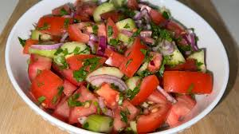
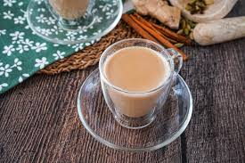

Culinária do Quênia
Uma mistura deliciosa de sabores africanos, influências indianas e árabes. Simples, saborosa e cheia de história.
Uma mistura deliciosa de sabores africanos, influências indianas e árabes. Simples, saborosa e cheia de história.
Conheça os sabores mais tradicionais e deliciosos da culinária queniana.
O prato mais icônico do Quênia. Feito à base de farinha de milho branca, tem textura firme e é servido como acompanhamento principal.
Prato nacional • Acompanhamento essencial
Carne grelhada no carvão. Servida com sal grosso, é o prato favorito em encontros sociais.
Churrasco queniano • Prato social
Couve refogada com tomate, cebola e especiarias. Nutritivo e muito comum no dia a dia.
Acompanhamento • Saudável
Salada fresca de tomate, cebola, pimenta e coentro.
Salada fresca • Refrescante
Chá preto com leite, gengibre, cardamomo e cravo. Bebida mais consumida no Quênia.
Bebida tradicional • Energético
Mistura de milho e feijão temperada. Prato simples e muito popular.
Prato tradicional • Vegetariano